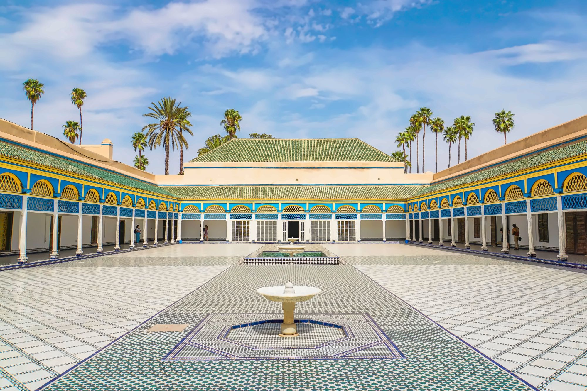
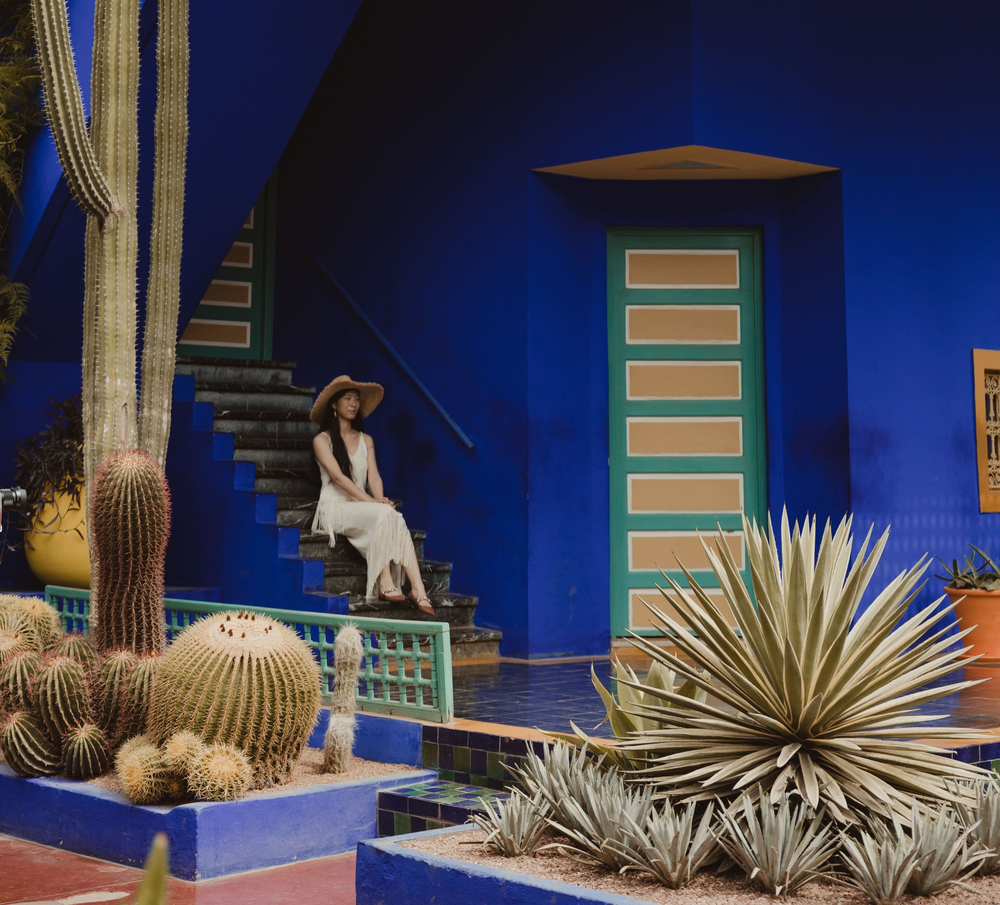

Jemaa el-Fnaa, the souks and the Red City in a single day
Everything we have learned from running this day trip from Agadir and Taghazout, written the way we would explain it to a friend.
My father has been driving the road from Agadir to Marrakech for more than forty years, and he still smiles every time the red walls of the old city rise up against the Atlas Mountains. There is something about Marrakech that never wears off, no matter how many times you arrive, the colors seem brighter, the air smells of spice and orange blossom, and the whole city hums with a kind of energy you feel in your chest before you can explain it. We created our Marrakech excursion because so many of our guests staying in Agadir and Taghazout told us they dreamed of seeing the Red City but did not know where to begin. This guide is everything we have learned from years of making that journey, written for you the way we would explain it to a friend sitting in our office over a glass of mint tea.
We always try to time our arrival so that you experience Jemaa el-Fnaa twice, once in the calm of midday, and again as the light softens and the square transforms. By late afternoon, the smoke from dozens of food stalls begins to curl into the sky, storytellers gather their circles of listeners, musicians tune their instruments, and the whole square swells into one of the greatest open-air spectacles on earth. We have stood in that square hundreds of times, and we still stop to watch. There is simply nothing else like it in Morocco, or anywhere.
Step through an archway off the main square and you enter the souks, a labyrinth of narrow covered alleys where Marrakech has traded for nearly a thousand years. Pyramids of saffron and cumin glow under shafts of sunlight, coppersmiths hammer trays into shining patterns, and hand-woven rugs hang like waterfalls of color from every wall. The air changes every few steps, leather, cedar wood, fresh mint, argan oil, and getting a little lost is honestly half the pleasure. We always tell our guests to slow down here, because the souks reward the traveler who wanders rather than rushes.
One of our favorite moments on this day trip from Agadir is watching a guest's face when they step from a dusty medina street into the courtyards of Bahia Palace. Behind an unremarkable doorway waits one of the finest examples of Moroccan craftsmanship in existence, ceilings painted in intricate floral patterns, walls of carved cedar and sculpted plaster, and marble courtyards shaded by orange trees. The palace was built in the nineteenth century to be the most beautiful residence of its time, and standing in its quiet gardens, you understand that its builders succeeded. It is a peaceful counterpoint to the wonderful chaos outside its walls.

Pro Tip: In the medina, the easiest way to keep your bearings is the Koutoubia Mosque's minaret, at 77 meters tall, it is visible from almost everywhere and always points you back toward Jemaa el-Fnaa. If a friendly stranger insists on "helping" you find your way and then asks for money, a polite but firm "la, shukran" (no, thank you) and a smile is all you need. Our guides handle all of this for you, but it is a useful phrase to know if you explore on your own for an hour.
Marrakech sits inland, away from the cooling breezes we enjoy on the coast in Agadir, so its seasons are more extreme and worth planning around. Spring, from March to May, is in our opinion the perfect window, daytime temperatures usually sit between 22°C and 28°C (72°F to 82°F), the Atlas Mountains behind the city are still capped with snow, and the gardens are in full bloom. Autumn, from late September through November, is nearly as good, with warm, golden days in the mid-20s Celsius and comfortable evenings.
Summer is a different story, and we are always honest with our guests about it. From June to August, Marrakech regularly climbs above 38°C (100°F) and can push past 45°C (113°F) in a heat wave. A summer day trip is still absolutely possible, we simply structure it around shaded palaces, gardens, and long, cool lunch stops, and we save the open square for the evening. Winter, from December to February, surprises many visitors in the best way: days are typically sunny and mild at 18°C to 21°C (64°F to 70°F), ideal for walking, though you will want a jacket once the sun sets. If you have flexibility, we recommend April, May, October, or November for the most comfortable Marrakech excursion.

Begin where Marrakech itself begins. Spend time in Jemaa el-Fnaa watching the juice sellers, herbalists, and performers, then dive into the souks behind it. Each section of the market has its own specialty, spices, lanterns, babouche slippers, ceramics, silver jewelry, and our guides know the workshops where you can watch artisans at work rather than simply browse the stalls. Give yourself at least ninety minutes here, and keep small cash handy for the treasures you will inevitably fall in love with.
Set aside about an hour for Bahia Palace, and take it slowly. Look up constantly, the painted cedar ceilings are the great glory of the place, and each room's design is different from the last. Mornings are quieter, and the light falling into the marble courtyards is beautiful for photographs. The palace floors are original and uneven in places, so this is where those comfortable shoes earn their keep.

The Koutoubia is the symbol of Marrakech, a twelfth-century minaret whose design later inspired towers in Seville and Rabat. Non-Muslim visitors cannot enter the mosque itself, but the exterior is magnificent from every angle, and the rose gardens beside it are one of the most pleasant free strolls in the city. We often stop here in the late afternoon, when the stone glows a deep pink and the call to prayer drifts across the square. It is a moment of calm that stays with people long after the trip ends.
If gardens and photography are your passion, Jardin Majorelle in the newer part of the city is worth the detour. Created by the French painter Jacques Majorelle and later restored by Yves Saint Laurent, it is a dreamlike collection of towering cacti, bamboo groves, and lily ponds set against walls painted in an electric cobalt blue found nowhere else. Tickets should be booked online in advance, as it is one of the most visited spots in Morocco. Tell us when you book your day trip and we will happily build it into your itinerary.

No visit to Marrakech is complete without sitting down properly for food. We take our guests to restaurants we trust, places serving slow-cooked lamb tagine, fluffy couscous, and tangia, the pot-roasted specialty that Marrakech claims as its own. And of course there is mint tea, poured from a height into small glasses, sweet and fragrant and endlessly refilled. In Morocco we say tea is not a drink but a conversation, and lunch on this trip is where many of our favorite conversations with guests have happened.
Pro Tip: Bring more small-denomination cash than you think you need. Many souk vendors and food stalls do not accept cards, and having exact or near-exact change makes bargaining smoother and tipping easier. ATMs exist near Jemaa el-Fnaa, but the queues can eat into precious exploring time.

Yes. Marrakech is one of the most visited cities in Africa and welcomes millions of travelers every year, and Morocco as a whole is considered a safe destination for tourists. Like any busy city, it asks for common sense: keep an eye on your belongings in crowds, use registered taxis, and be politely firm with overly persistent vendors or unofficial "guides." On our Marrakech excursion you are accompanied throughout the day by a local guide who knows the city intimately, which removes almost all of these small stresses entirely.
The honest answer is that it depends on your group size, the season, and how you would like to customize the day, a private tour for two is priced differently from a family group, and options like Jardin Majorelle tickets or a special lunch affect the total. Rather than publish a number that may not fit your situation, we prefer to give every traveler an exact, transparent quote with no hidden costs. Send us a message with your dates and group size, and we will reply quickly with a clear price.
We will always be honest with you: it is a real journey. The drive takes roughly 3 to 3.5 hours each way on a good modern highway, so you should expect around six to seven hours of total travel in the day. We soften this with early starts, comfortable air-conditioned vehicles, and a scenic rest stop along the way, and most of our guests tell us the anticipation of watching the landscape change from coast to plains to the red city itself becomes part of the experience.
A well-planned day trip gives you the essential Marrakech, Jemaa el-Fnaa, the souks, a major palace or monument, and a proper Moroccan lunch, and for travelers based in Agadir or Taghazout with limited holiday time, it is a wonderful and complete experience. That said, Marrakech rewards time, and if your schedule allows, an overnight stay lets you experience the square after dark at full intensity and explore at a gentler pace. We arrange both day trips and multi-day itineraries, so tell us what you are dreaming of and we will design around it.
Morocco is a welcoming and relatively relaxed country, but the medina is a traditional space and modest dress is both respectful and practical. For all travelers, we suggest lightweight clothing that covers shoulders and knees, loose trousers, midi skirts, or long shorts with a t-shirt or light blouse are perfect. Women do not need to cover their hair except when a specific religious site requires it. Modest dress also has a pleasant side effect: vendors tend to treat you a little more like a traveler and a little less like a tourist.
Absolutely, in fact, bargaining is expected, and vendors quote their first price assuming you will negotiate. A good rule of thumb is to counter at roughly a third to half of the opening price and settle somewhere in the middle, always with a smile, because haggling in Morocco is a friendly ritual rather than a confrontation. Never start bargaining for an item you have no intention of buying, and remember that walking away slowly is the oldest negotiating tactic in the medina. Our guides are happy to advise on fair prices for rugs, leather, and argan oil so you shop with confidence.
Some cities you visit; Marrakech you feel. It stays with you, the drumbeats rising over Jemaa el-Fnaa at dusk, the flash of a copper lamp in a dark souk alley, the taste of sweet mint tea after a morning of wandering. For us, sharing that feeling is not just a job but a family tradition, built on decades my father has spent showing travelers the roads and stories of this region. If the Red City is calling you, let us answer together, contact Let's Camel Tours today to plan your Marrakech day trip from Agadir or Taghazout, and let our family show you the Morocco we know and love.
Ready to plan your own Morocco trip?
Contact Us